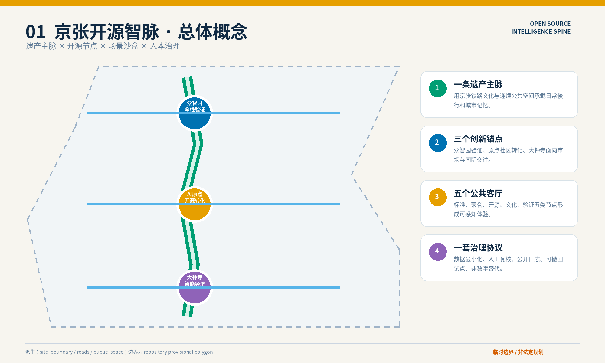
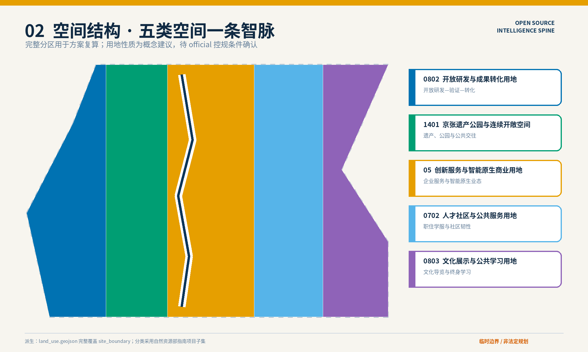
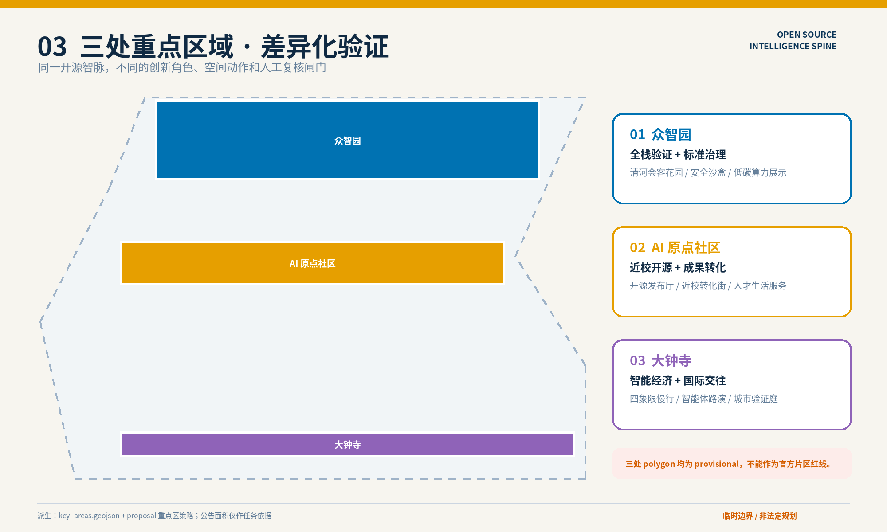
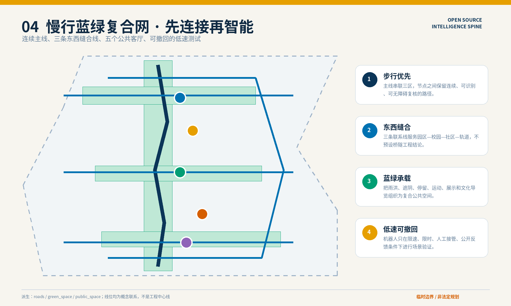
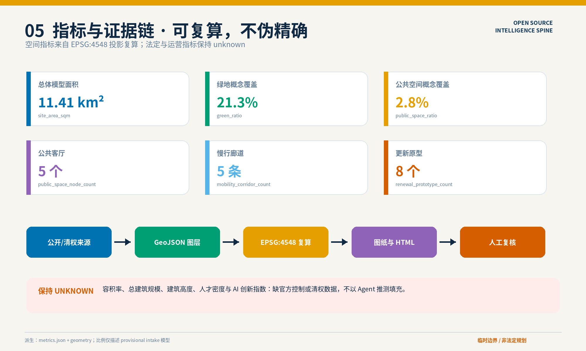

总览地图｜一脉三锚五客厅
空间策略首先修复公共空间与创新生态的连接，再叠加受监管、可撤回的 AI 服务。建筑和工程动作均为概念建议。

三层范围
43.6 km² 统筹研究产业生态、三区两翼协同与未来城市机制。
约 11.4 km² 总体设计空间结构、更新、交通市政、蓝绿和风貌。
368.4 ha 重点范围三处片区的差异化详细设计与实施闸门。
用地分区与建筑更新项目
五类概念空间形成完整拓扑分区；8 个建筑原型仅表达“调查后可选择的更新工具”，不代表具体拆改留决定。

开放研发研发—验证—转化可见化。
遗产绿脉文化、慢行、交往与生态复合。
人才与服务生活、学习、企业与公共服务共享。
重点区域

众智园全栈技术验证、标准与安全治理、清河创新会客花园。
AI 原点社区近校开源发布、成果转化、人才生活与校园园区缝合。
大钟寺智能体路演、智能原生服务、轨道四象限步行联系。
交通慢行与蓝绿公共空间
1 条连续主线、3 条东西联系、1 条协作骑行环、5 个公共客厅。道路和站点工程需另行专业深化。

AI 场景与人本治理
产业测试验证模型安全沙盒端侧算力评测低速机器人验证
限定范围、人工接管、公开日志、退出阈值。
公共服务慢行无障碍助手健康服务导航企业服务 Copilot
只做导航和提示，不替代医疗、法律或审批判断。
文化与社区可溯源导览开发者荣誉廊开源发布厅
人工策展、版权清权、事实版本记录与非数字替代。
核心指标与自检状态
提交模型面积11.41 km²site_area_sqm
绿地概念覆盖21.3%green_ratio
公共空间概念覆盖2.8%public_space_ratio

自检状态：deterministic / spatial / visual / professional evidence 四道检查均须 PASS。
保持 unknown：容积率、建筑高度、总建筑规模、人才密度、AI 创新指数。
任务覆盖
| 任务 | 方案回答 | 主要证据 |
|---|---|---|
| agent.1 总体概念 | 京张开源智脉、一脉三锚五客厅、原创视觉识别 | site-overview / proposal |
| agent.2 创新生态 | 研究—开源—验证—转化—服务—传播闭环与六案例 | proposal / sources |
| agent.3 AI+ 场景 | 12 张场景卡、3 个测试验证场景、6 类画像 | proposal / roads / public_space |
| agent.4 公共空间 | 五个公共客厅、慢行蓝绿复合网、荣誉展示体系 | public_space / green_space |
| agent.5 文化叙事 | 铁路工程—中关村开源—责任 AI 三幕叙事 | proposal / copyright |
| agent.6 长期运营 | 季度节奏、年度开源周、场景闸门和贡献账本 | phasing / risk / proposal |
来源、假设与风险
来源
官方公告、清权 Agent 任务书、住建部与自然资源部标准、仓库 provisional geometry，以及 6 个官方/机构案例页面。完整登记见 sources.json。
假设
官方红线、控规、道路、建筑、权属、市政、文保和公共服务底数仍待补。完整登记见 assumptions.json。
最高风险
政策与空间条件不确定、跨专业实施复杂。缓解方式：可撤回试点、逐级人工复核、公众参与、非数字替代、official 数据到位后全量复算。